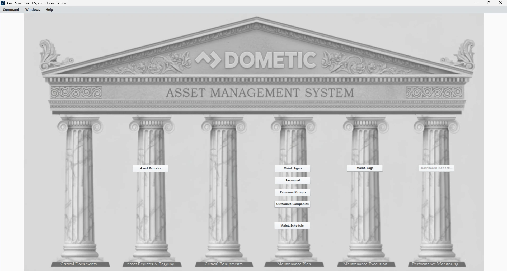

Dometic · Co-Op · Sept 2025 — April 2026
Asset Management System
A SCADA-based maintenance platform built in Ignition — replacing paper logs and scattered spreadsheets with a single, automated system for tracking assets, preventive maintenance, and the people responsible for it.

Overview
Dometic Vancouver's preventive maintenance had historically lived on paper logs and overlapping spreadsheets — no real-time visibility into when a machine was last serviced, and no way to automatically flag overdue work. Over my Fall 2025 co-op term, I helped build the data foundation for a SCADA-based Asset Management System (AMS) in Ignition: running a physical verification sweep across all three buildings to correct outdated names, numbers, and statuses, then organizing every machine and workbench into a clear work-cell hierarchy and linking each asset to its preventive maintenance (PM) tasks and frequencies.
In Spring 2026, the focus shifted to turning that foundation into a live operational tool: finalizing asset tagging, uploading and structuring the full PM dataset, and activating automated weekly scheduling — every Thursday the system dispatches maintenance tasks by email with a 14-day completion window, and personnel log completion directly back into the system. Since going live in January, the platform has sustained a preventive maintenance completion rate above 85% over rolling two-week windows, and I now generate monthly performance reports for the Director of Operations and maintenance leadership.
System Modules
Inside the AMS
Built around how maintenance actually gets planned, assigned, tracked, and reported on — plus a look at how it comes together behind the scenes in Ignition Designer.
Asset Register & Tagging
The core inventory: every machine and workbench across all three buildings, structured into a three-level hierarchy — work or machining center, then parent system or child component, then the individual asset (e.g. WC_2010‑01 SPA EOL Test). Each entry carries its manufacturer, model spec, serial number, year, building, and an active / spare / decommissioned status. Getting here meant physically walking every bench and machine in all three buildings with Operations Manager Rob Pehl to correct names and numbers that had drifted out of date as the facility changed over the years.
Maintenance Types
The library of preventive maintenance tasks pulled from years of paper logs and scattered spreadsheets — everything from "drain/clean washer tanks" and "change oil filters" to "audit controlled binders" and "check emergency equipment is accessible." Each type gets a unique ID, a plain-language description, an optional link to written instructions (PDFs for more involved procedures), and a status, so it can be attached to any number of assets on the Maintenance Schedule.
Maintenance Schedule
Where every other module comes together. Each schedule row pairs one asset with one maintenance type, an assigned person, group, or outsourced company, a frequency in days, and a calculated next-due date — with an option to suppress a row by another schedule ID when tasks overlap. A custom Ignition script reads this table every Thursday, generates that week's PM tasks, and emails them to the right people with a 14-day window to complete and close them out.
Personnel & Groups
Everyone who can be assigned a task: in-house employees linked to their Ignition username and company email so a scheduled PM lands in their queue automatically, plus personnel groups for tasks that need more than one person (like the maintenance group), and a separate register of outsourced companies for work that has to be contracted out. Keeping this current, including marking people inactive when they leave, is what keeps notifications landing with the right person instead of a dead inbox.
Maintenance Execution & Logs
Every dispatched task lands here as a log entry tied back to its schedule ID and asset, with a due date, status (scheduled, completed, or cancelled), who performed and who closed it, and a free-text note field for anything worth flagging — a coolant change that ran long, a task cancelled because the machine was down for other reasons, and so on. It's a full audit trail in place of the paper sign-off sheets this replaced, filterable by date range, work center, status, or assignee.
Performance Monitoring
System data exported and rolled up into year-to-date charts, broken out by operational group — B2 operations, B3 operations, external, maintenance, and maintenance cleaning — and by status: completed, overdue, cancelled, or still scheduled. It's the view that answers "are we actually keeping up," at a glance, instead of digging through the raw logs group by group.
Monthly Reporting
Once a month, the same completion data is compiled into a chart and written up as a short email to the Director of Operations, Operations Manager, and Maintenance Manager — what got done, what's overdue, and a couple of lines of plain-language context (for example, flagging that newly-added workbench PMs are being completed efficiently, or scoping out expansion to facility assets like HVAC and electrical). It's the part of the system that turns a database into something leadership actually reads and acts on.
Critical Documents
There's no screen to show for this one — it was in-person work, not screen work: walking every building, floor by floor, to find the binders, manuals, and reference sheets already sitting at each bench, then working out how they should be organized, filtered, and structured before any of it could be tied back to an asset in the system.
Built in Ignition Designer
Every screen in the AMS — edit_asset, edit_maintenance_types, edit_maintenance_schedule, edit_maintenance_logs, edit_personnel, edit_personnel_groups, edit_outsource_company, and home — is its own Vision window inside one shared Ignition project, visible in the project browser on the left. The home window (shown here mid-build) hosts the pillar navigation and opens each editor window on demand.
Screen & Component Configuration
Every window's behavior is set individually in the Vision property editor — closable, maximizable, and resizeable flags, start-maximized state, cache policy, title bar text and display policy, dock position and index, and min/max size constraints. Getting these consistent across eight different windows is what makes the system feel like one cohesive application instead of eight separate tools glued together.
Full Write-Ups
Term Reports
The two technical reports I submitted to SFU covering this project in detail, from the initial data foundation to full operational deployment.